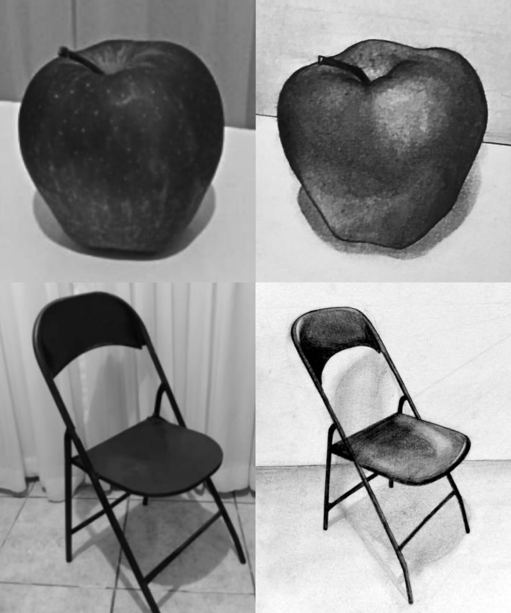
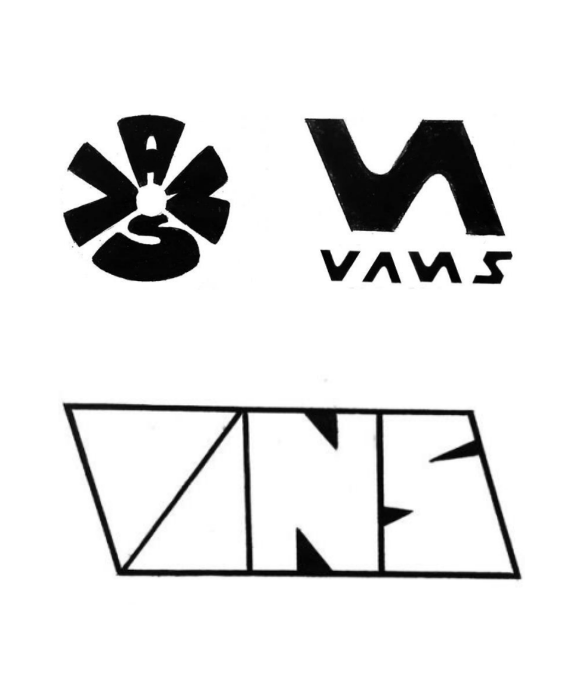

Desenho de observação
Quando trabalhamos nossas habilidades como um "designer gráfico", buscamos trabalhar várias facetas de nossos sentidos para, cada vez mais, aprimorarmos a forma como visualizamos o mundo. Consequentemente, isso nos auxilia a representá-lo da melhor maneira possível.
É importante evidenciar que não se trata de uma fotografia ou de uma obra ultrarealista, mas sim de um exercício constante de observação e de lapidação (seja em qual meio for) do desenho em questão.
Identidade de marca
Uma das tarefas mais arduosas quando lidamos com a criação de novos conceitos, bem como identidades visuais, logos e afins, se refere à disposição natural da criatividade.
Seguindo essa ideia, o trabalho de metodologia (de identidade de marca) nos faz colocarmos em prática alguns dos principais passos em relação aos modelos de metodologias existentes a partir de algumas técnicas comuns.
Desenho de observação
Quando trabalhamos nossas habilidades como um "designer gráfico", buscamos trabalhar várias facetas de nossos sentidos para, cada vez mais, aprimorarmos a forma como visualizamos o mundo. Consequentemente, isso nos auxilia a representá-lo da melhor maneira possível.
É importante evidenciar que não se trata de uma fotografia ou de uma obra ultrarealista, mas sim de um exercício constante de observação e de lapidação (seja em qual meio for) do desenho em questão.